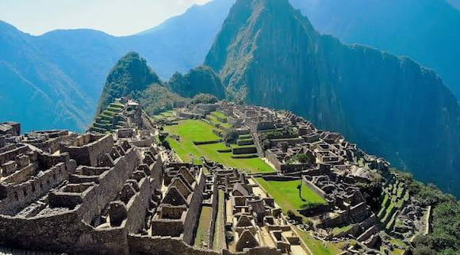

Cusco is one of the most amazing places in Peru. It has beautiful mountains, old streets, and a lot of history. It was the capital of the Inca Empire, so you can see many ancient buildings mixed with Spanish architecture. The city is also the main gateway to Machu Picchu, but Cusco itself is worth visiting. You can enjoy delicious local food, explore colorful markets, and experience the friendly culture. It's a great place for people who love history, nature, and adventure.
